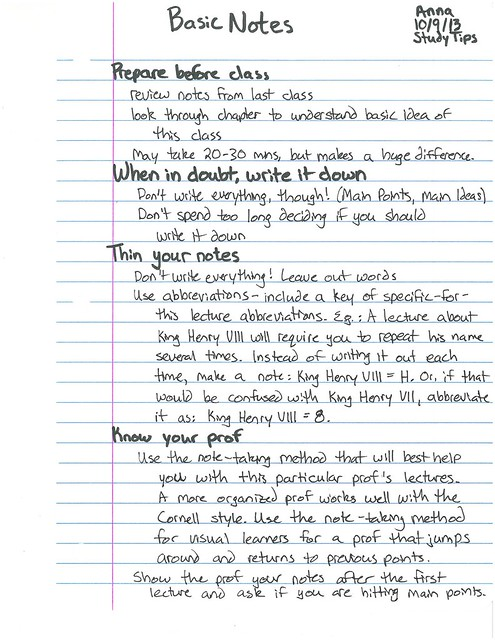

InkWave
Overview
InkWave is an advanced API designed to convert handwritten text from an image into digital text. The process involves three main stages: First, a Computer Vision (CV) model transcribes the handwritten content into digital text. Next, the text undergoes cleaning and formatting through a Natural Language Processing (NLP) model. Finally, the text is passed through a Large Language Model (LLM) to reformat and restore the original structure of the content, ensuring the final output is as close to the intended format as possible.
Key Features
- Handwriting Recognition: A robust CV model is used to accurately recognize and transcribe handwritten text from images.
- Text Cleaning and Formatting: The transcribed text is cleaned and formatted using an NLP model to remove any inconsistencies or errors.
- Text Restoration: An LLM is used to reformat the cleaned text, restoring the original structure and style of the handwritten document.
- PDF Export: The final output can be exported as a well-formatted PDF document, making it easy to share and use the transcribed text.
Technologies Used
- PaddleOCR: A powerful tool for Optical Character Recognition, used to transcribe handwritten text from images.
- OpenAI API: Leverages GPT models to reformat and restore the structure of the text after initial transcription and cleaning.
- Natural Language Toolkit (NLTK): Provides tools for text processing and cleaning to ensure the final output is free of errors.
- Flask: A lightweight web framework used to build and serve the InkWave API, enabling seamless integration into other applications.
Demo
Below is a demonstration of the InkWave API in action. The demo showcases the process of uploading an image with handwritten text, the API's conversion of the image to digital text through OCR, the cleaned and formatted text using NLP, and the final AI-enhanced output.
Image Input
Original Handwritten Image
OCR Result
Basic Notes
Anng
10/9/12
StudyTips
Prepare before class
reicw nots from last class
look through chaer to wnderstard basiideaof
this class
May tke R0-3o mns but makes a buge differee
When in doubt, write it down
Pont wste evoythng though Main Pomts Main ldeas
Dont spend too long decdng F you should Wredown
Thin your notes
Don+wrk evoythngLeawe outwords
use abbreyiations-include a key of speciFi<-for-
this lecture abbreviatrons.g.A lectre about
Kmy Hery Vll wll requirc you t repeat his name
several tmes.nstad of wnty t out each
Hmemake a no+Km HenyVl=HOfthat
woul be confusedw Kmg Hory Vllabbrerat
it asKg HeryVl=8
nnow your prof
usethe nok-taky method that wl besthele
yow wth this particular prof's lectres
A more ocgaoiz prof works well wth the
Cornell style.usethe not-takn methoc
fc vsua leaners for a prof that jumps
arou an returns t pcous ponts
Show the prof ye nots aActhe first
lectre and ask if you are hithng man ponts.
NLP Processed Result
Basic Notes
Anng
10/9/12
Study Tips
Prepare before class
review notes from last class
look through chapter to understand basic idea of
this class
May take 20-30 mins but makes a huge difference
When in doubt, write it down
Don't waste everything though. Main points, main ideas
Don't spend too long deciding if you should write down
Thin your notes
Don't write everything. Leave out words
use abbreviations - include a key of specific abbreviations for
this lecture. E.g., A lecture about King Henry VIII will require you to repeat his name
several times. Instead of writing it out each time,
make a note: King Henry VIII = KH8.
That way, it won’t be confused with King Henry VII. Abbreviate
it as King Henry VIII = 8.
Know your prof
use the note-taking method that will best help
you with this particular prof's lectures
A more organized prof works well with the
Cornell style. Use the note-taking method
for visual learners for a prof that jumps
around and returns to previous points.
Show the prof your notes after the first
lecture and ask if you are hitting main points.
AI-Enhanced Result
Basic Notes
Anna
10/9/12
Study Tips
- Prepare before class
- Review notes from last class
- Look through chapter to understand basic idea of this class
- May take 20-30 mins but makes a huge difference
- When in doubt, write it down
- Point: write everything through Main Points Main Ideas
- Don't spend too long deciding if you should write down
- Thin your notes
- Don't write everything. Leave out words.
- Use abbreviations - include a key of specific-for-this lecture abbreviations. e.g., A lecture about King Henry VIII will require you to repeat his name several times. Instead of writing it out each time, make a note: King Henry
VIII = H8. For that would be confused with King Henry VII, abbreviate it as King Henry VIII = 8.
- Know your prof
- Use the note-taking method that will best help you with this particular prof's lectures.
- A more organized prof works well with the Cornell style. Use the note-taking method for visual learners for a prof that jumps around and returns to previous points.
- Show the prof your notes after the first lecture and ask if you are hitting main points.
Explore the source code on GitHub:
GitHub Repository